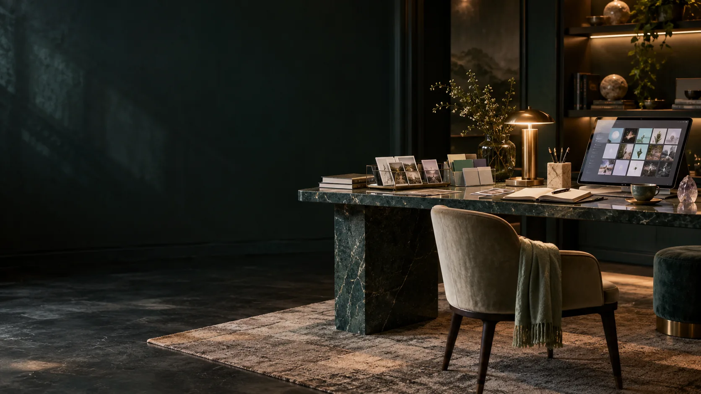

PERSONAL AURA / MATRIX AND MEMORY
Give your information a place.
Aura Matrix Studio supplies an evolving workbench for categories, tables, spatial addresses and personal meaning. Genesis extends that foundation into a continuing, source-linked relationship.
A minimum viable self.
A useful first profile contains chosen identity, vocabulary, values, relationships, relevant history, current conditions and intended uses. The profile contract states which tasks that information supports. Deeper layers grow through use, review and additional permission.
One record, several perspectives.
Seven nested horn-torus workspaces use Root, Sacral, Solar Plexus, Heart, Throat, Brow and Crown perspectives. The source baseline assigns twelve rows and twenty-four columns to each shell: 288 facets, 2,016 across seven shells and 4,032 interior/exterior addresses. A facet address is not a limit of one record.
Identity survives a change of view.
A category row, torus location, timeline and memory-palace doorway point to stable records. Moving an item between displays does not change its source identity. Media, event history, meaning and spatial placement are related fields.
An evolving studio with a specific source snapshot.
The protocol inspected Matrix Studio revision 2232f1d on 13 October 2026. Its catalogue supplies examples; the deeper Genesis layers remain development work. The current website and pinned repository serve different purposes.
Aura Matrix Studio.
Explore the category, table and spatial-record foundation, then return to the Genesis design questions.
Open the studio Read the pinned source